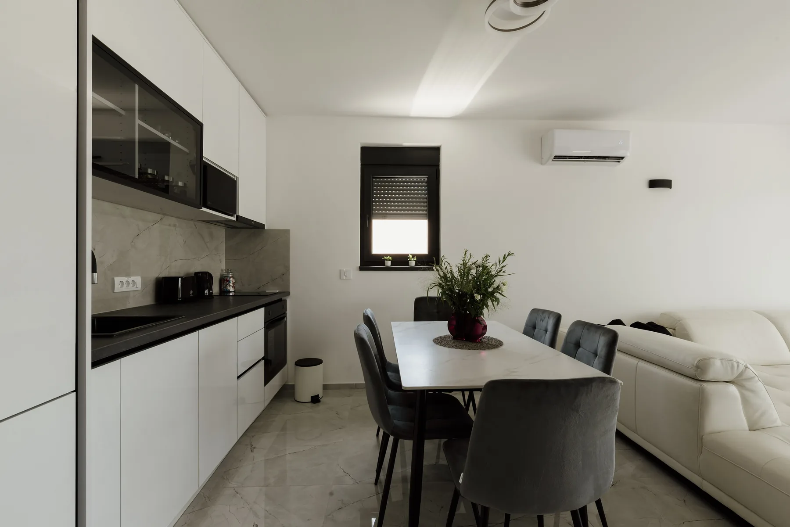

Sandy, Utah · Licensed & insured
Appliance repair in Sandy, done honestly.
Trusty Appliance Repair restores your refrigerator, washer, dryer, dishwasher, oven and more, swiftly and professionally, with genuine parts, transparent pricing and a 90-day warranty on every repair.
on all repairs
Kitchen photo · Shixart1985, CC BY 2.0, via Wikimedia Commons
Turn the dial
What’s your appliance doing?
Pick the appliance. The read-out shows what we fix on it and one thing to try before you call.
REFRIGERATOR · REPAIR
From temperature inconsistencies to unusual noises.
Try this first: Location Matters: Place it Right. The location of your refrigerator can impact its efficiency and lifespan.
DRYER · REPAIR
From overheating to ineffective drying.
Try this first: Clean the Lint Filter Regularly. Cleaning the lint filter before or after each load is one of the simplest yet most crucial steps in maintaining your dryer.
WASHER · REPAIR
Diagnosing issues with precision, genuine parts.
Try this first: Mindful Loading: Don't Overload. Resist the urge to stuff your washing machine with more clothes than it can handle.
DISHWASHER · REPAIR
From leaks to poor cleaning performance.
Try this first: Loading Smartly: Avoid Overloading. While it might be tempting to cram as many dishes as possible into your dishwasher, overloading can hinder its efficiency and strain its components.
OVEN & RANGE · REPAIR
Precise diagnostics and factory replacement parts.
Try this first: Regular Cleaning: A Must-Do. Regular cleaning isn’t just for aesthetic purposes; it’s vital for the longevity of your range.
MICROWAVE · REPAIR
From heating problems to electrical glitches.
Try this first: Proper Placement Matters. Where you place your microwave can impact its performance and longevity.
DISPOSAL · REPAIR
From jamming to unusual noises.
Good to know: we bring genuine parts and give you an honest assessment before any work.

Our integrity
An honest assessment. No surprises.
From the moment you reach out, expect a genuine, forthright experience. Our technicians approach each repair with dedication to accuracy: an honest assessment of your appliance’s condition, transparent pricing that leaves no room for surprises, and repairs that stand the test of time.
- Genuine parts and industry-best practices
- Timely service that respects your schedule
- If we make a mistake, we fix it promptly
- 90-day warranty on all repairs
Repairs
Seven appliances. One trusted team.
From temperature inconsistencies to unusual noises.
02Dryer repairFrom overheating to ineffective drying.
03Washer repairDiagnosing issues with precision, genuine parts.
04Dishwasher repairFrom leaks to poor cleaning performance.
05Oven & range repairPrecise diagnostics and factory replacement parts.
06Microwave repairFrom heating problems to electrical glitches.
07Disposal repairFrom jamming to unusual noises.

Our mission
To restore the functionality of your appliances swiftly, efficiently, and with the utmost professionalism.
Refrigerator door · Tony Webster, CC BY 2.0, via Wikimedia Commons
Maintenance tips
Make it last longer.
Questions
Before you call.
From the blogWhat temperature should your fridge and freezer be? A food-safety guideThe temperatures FDA recommends, why an appliance thermometer matters, and what to keep or toss after an outage.
Read it01Do you offer a warranty?
Yes. We offer a 90-day warranty on all repairs, and we’re licensed and insured.
02Which brands do you work on?
Some of the brands we work on: Cove, Crosley, Electrolux, Estate, Jenn-Air, Kenmore, Kirkland Signature, Magic Chef, Maytag, Sub-Zero, Viking, InSinkErator, Thermador, Whirlpool.
03What appliances do you repair?
Refrigerators, dryers, washing machines, dishwashers, ovens, ranges, microwaves and garbage disposals.
04Do you use genuine parts?
Yes. We use genuine parts and industry-best practices, so repairs are effective and enduring.
Schedule a Repair
Fixed right. Backed for 90 days.
Call (801) 255-9063 to schedule an appointment. Licensed and insured, genuine parts, and a 90-day warranty on all repairs.
Schedule a Repair